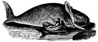

American Conservation Cutoff
A new American Conservation Corps program, patterned after the Youth Conservation Corps set up by FDR, has been vetoed by President Reagan. The ACC would have employed young people to do trail maintenance, tree planting, erosion control, and other tasks in state and federal parks, forests, and such. The savings from the program, compared with the costs of hiring outside contractors to do the same jobs, would have been huge. But the president evidently was swayed by his budget director, David Stockman, who apparently didn't want to spend the $225 million already approved by Congress for the ACC.
Even though all sperm whaling was supposed to stop with the spring hunt of 1983, the United States has signed an agreement that allows Japan to continue commercial whaling through 1987. This action directly contradicts a 1981 International Whaling Commission ruling that the U.S. signed to protect the whales.
According to Commerce Secretary Malcolm Baldridge, Japan has agreed to cease all commercial whaling by the end of 1987 in return for the U.S. concession. But dispatches in Japanese newspapers quote Japanese officials as saying they don't intend to stop whaling. Thus, more whales are fated to end up as lipstick and pet food on Japanese supermarket shelves.
"The U.S. government has just gone back on its 13-year campaign in behalf of the whales," said FOE's wildlife specialist, David Phillips.
Thanks to a comeback, the Bahaman swallowtail butterfly has been dropped from the EPA's endangered species list. Meanwhile, Tampa Bay has witnessed the reappearance of a crustacean that supposedly disappeared 40 years ago: The Mexican saber crab was recently spotted in the nearby Alafia River.
In Ocean Springs, Mississippi, the sandhill crane is also enjoying a small but steady resurgence in a 17,000-acre, federally protected refuge. A few years ago there were thought to be only 30 surviving sandhill cranes, but last year the flock had increased to more than 50.
In Minnesota, the country's largest manufacturer of electric fences has decided to redesign its product because the fences are dangerous to hummingbirds. The small red plastic insulators on the fences are often mistaken for flowers by hummingbirds, which are electrocuted when they try to extract nectar. Albert Berg, chairman of the board for North Central Plastics, said that the style and color of the insulators will be changed. The company advises farmers who have fences with the old insulators to paint the insulators another color.
Late last vear the media had fun with an Agency for International Development report that suggested scientists may have found a pig whose meat could be kosher. This discovery, according to reports, might lead to an important new food source . . . particularly for Jews and Muslims, who do not eat pork because "regular" pigs aren't ruminants. (Porkers lack a second stomach, and therefore don't have cud to chew. However, they do fulfill another kosher requirement: They have cloven hooves.)
But hold on! Into the picture steps a California biologist who spent years studying the "kosher pig," babirusa (or deer boar), in the jungles of Indonesia. "Kosher or not," said Victoria Joan Selmier, "the babirusa is an endangered species." Selmier's research has indicated that there are fewer than 1,000 of the animals on the planet and that their critical habitat is already threatened. The capture of enough of them to begin a commercial breeding colony might well spell the end of the wild population.
Ironically, the babirusa owes its continued existence to the fact that the people who share its habitation on the Indonesian island of Sulawesi are Muslims and therefore leave the babirusa alone. If these people were convinced that it was all right to eat the animal, that would be the end of it in no time. Selmier thinks the suggestions about raising the babirusa domestically are hogwash. "The babirusa wouldn't do a third as well as America's 60,000,000 hogs. Babirusa meat would be very expensive at best, affordable only by the affluent."
EDITOR'S NOTE: The worldwide organization called Friends of the Earth is one of the most effective environmental groups in existence today, and the activities of FOEalong with a broad range of other news concerning ecological developments-are described each month in its publication titled Not Man Apart. You can become a member of Friends of the Earth, and receive the excellent tabloid, by sending $25 ($100 for sponsor, $1,000 for life, $12 student/low income)-or $15 for a subscription only-to FOE, 1045 Sansome St., San Francisco, CA 94111.
|
|
 |
|